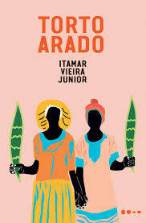
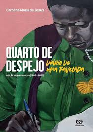
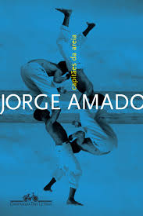
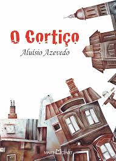
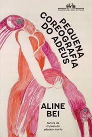
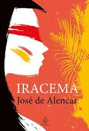

Empréstimos Populares:
|  |
 |
 |
Torto Arado
Itamar Vieira Junior
Nas profundezas do sertão baiano, duas irmãs descobrem um segredo escondido na velha mala de sua avó. A partir daí, suas vidas se entrelaçam ainda mais em uma narrativa marcada por tradições ancestrais, laços familiares e a luta pela sobrevivência em um Brasil rural marcado por injustiças e resistência.
Emprestado |
A Vida Invisível de Eurídice Gusmão
Martha Batalha
No Rio de Janeiro dos anos 1940 e 1950, Eurídice e Guida são duas irmãs cujos destinos se distanciam após uma decisão inesperada. Enquanto Guida foge de casa para viver um grande amor, Eurídice permanece, sufocada pelos limites impostos à mulher da época.
Não Emprestado |
Quarto de Despejo: Diário de uma Favelada
Carolina Maria de Jesus
Em seu diário, a autora narra a rotina dura e comovente de uma mulher negra moradora da favela do Canindé, em São Paulo. Entre a coleta de papel para alimentar os filhos e reflexões sobre desigualdade, Carolina registra com autenticidade o Brasil das periferias na década de 1950.
Emprestado |
|
|
Histórias que Retratam o Brasil:
 |
 |
 |
Vidas Secas
Graciliano Ramos
A saga de Fabiano, Sinhá Vitória e seus filhos revela a luta de uma família de retirantes em meio à seca e à miséria do sertão nordestino. O romance retrata a pobreza extrema e a luta pela dignidade, expondo a dura realidade social de um Brasil desigual e esquecido.
Emprestado |
Capitães da Areia
Jorge Amado
Um grupo de meninos abandonados vive de pequenos crimes nas ruas de Salvador nos anos 1930. Liderados por Pedro Bala, eles formam uma verdadeira comunidade de sobrevivência, enfrentando a repressão policial e a falta de oportunidades. Um retrato emocionante e crítico dos marginalizados no Brasil.
Não Emprestado |
O Cortiço
Aluísio Azevedo
Ambientado em um cortiço do Rio de Janeiro no século XIX, o romance apresenta a vida de imigrantes, negros e trabalhadores pobres em um espaço de convivência intensa e conflitos sociais. A história revela a luta por ascensão social, o preconceito racial e as tensões de uma sociedade em transformação.
Emprestado |
|
Contemporâneos:
|
|
 |
Tudo É Rio
Carla Madeira
Dalva, uma prostituta marcada pelo abandono, e Lucy, uma mulher atormentada pelo ciúme, se veem presas em uma relação inesperada com Venâncio, um homem dividido entre a culpa e o desejo. Com uma narrativa intensa, o livro aborda amor, perda e redenção, explorando as dores e os encontros que mudam vidas.
Emprestado |
Se Deus Me Chamar Não Vou
Mariana Salomão
João é um menino de 11 anos que lida com a iminente morte do avô, o bullying escolar e os medos típicos da infância com humor e doçura. Em um diário repleto de reflexões, ele questiona o sentido da vida e da morte, revelando a profundidade dos sentimentos infantis com leveza e sensibilidade.
Não Emprestado |
A Pequena Coreografia do Adeus
Aline Bei
Julia é uma jovem que foge de casa em busca de um novo começo após uma infância marcada pela violência e pela ausência de afeto. Em uma narrativa poética e delicada, ela explora os caminhos para a reconstrução de sua identidade e a esperança de encontrar pertencimento no mundo.
Emprestado |
|
|
Clássicos:
 |
 |
 |
Dom Casmurro
Machado de Assis
Bentinho, narrador desconfiado e melancólico, relembra sua história de amor com Capitu, marcada pela suspeita de traição. Em um enredo psicológico sutil, o romance questiona a confiabilidade do narrador e discute temas como ciúmes, memória e verdade, tornando-se um dos maiores clássicos da literatura brasileira.
Emprestado |
Memórias Póstumas de Brás Cubas
Machado de Assis
Após a morte, Brás Cubas decide narrar sua vida com um olhar sarcástico e crítico. Sem pudor, ele revela sua trajetória de egoísmo, privilégios e fracassos, desafiando convenções literárias e expondo as hipocrisias da sociedade carioca do século XIX com ironia mordaz.
Não Emprestado |
Iracema
José de Alencar
A história de amor entre Iracema, uma jovem indígena da tribo dos tabajaras, e Martim, um guerreiro português, simboliza o encontro de culturas que deu origem ao povo brasileiro. O romance mistura lirismo e idealização, exaltando a beleza da natureza e o mito fundacional do Brasil.
Emprestado |
|